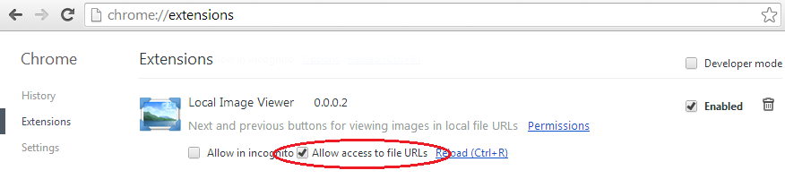
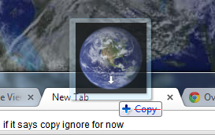
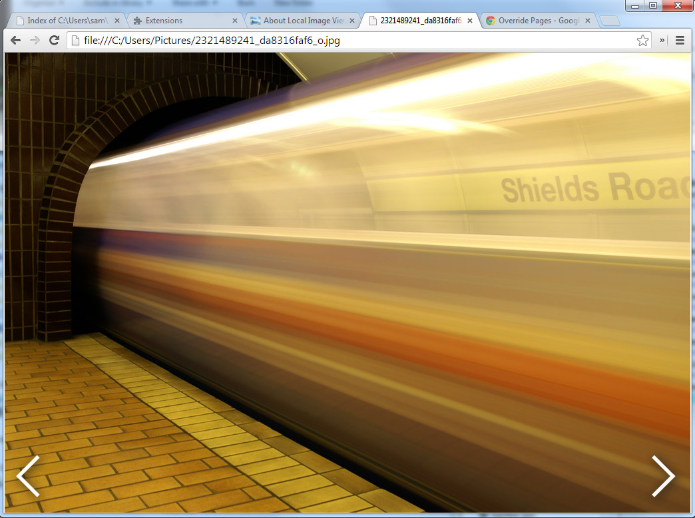

About Local Image Viewer
For local image viewer to work you have to allow it to access local file URLs at chrome://extensions/

When Local Image Viewer is enabled, drag an image from a folder full of images into Chrome.

You may also set Google Chrome as the default handler for image file types.
Next and previous arrows will show up allowing you to switch to the next and previous images in the local directory.
Also you may use the arrow keys to navigate next → and previous ← while space bar controlls zoom.
This allows Google Chrome to operate as a functional replacement for the slow and buggy Windows Photo Viewer
Now you can use Google Chrome to browse through directories of photos!

Now it works more like Chrome OS. Rate or share Local Image Viewer